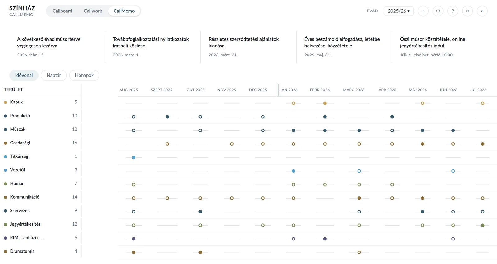
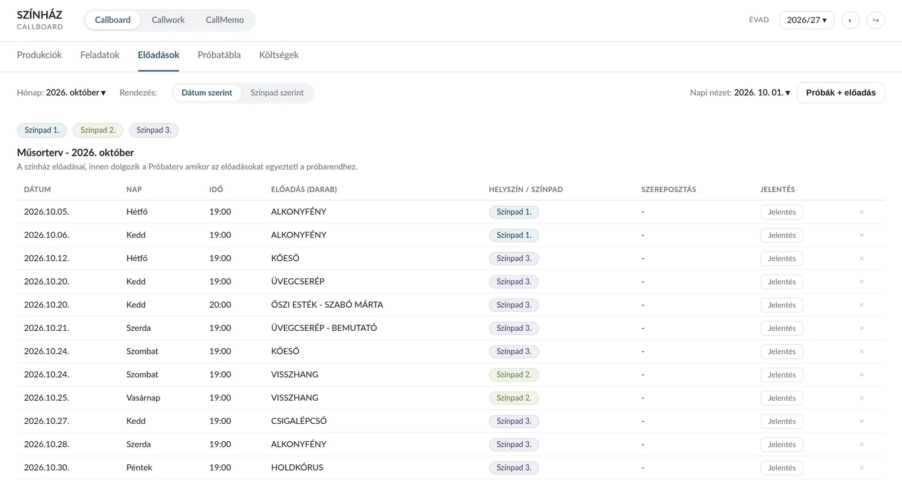
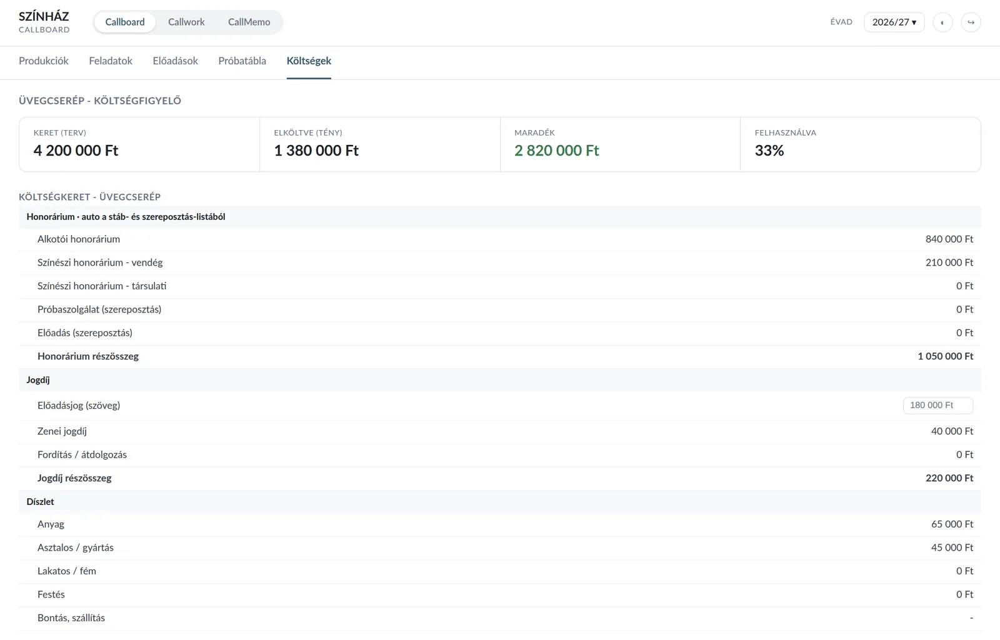

Callboard
An operational production system, in live use
What I could not find ready-made, I built myself. Today it runs my oversight of the theatre's daily operation.
The problem
Production planning lived in spreadsheets and email. The rehearsal schedule went out as an attachment, and from that point nobody knew who had opened it, who had seen the change, or which version was current. A call sheet that never arrives is not an administrative nuisance: it is a crew member who does not come to work because of it.
The solution
I modelled the system in a spreadsheet first, because it was closer to how I think, and showing what I wanted was easier than explaining it. That became the web version, and today it is three applications on one shared backend.
| application | what it does |
|---|---|
| Callboard | productions, rehearsal schedule, call sheets, distribution, budget |
| Callwork | weekly rosters and time records for the technical departments |
| CallMemo | management tasks, decisions, annual plan, overview, progress tracking, task structures |
| viewer page | a shareable rehearsal schedule with no login, with personal codes |
Crew members install nothing. The personal link in their email opens on their phone, and once they add it to the home screen, from that moment it behaves like an app.


What a spreadsheet cannot do
Distribution is always verifiable, traceable. Nothing is marked as sent until the email actually goes out. There is no state where the system says it was received and reality says otherwise.
Three questions, three answers. When it went out and for which day. Whether anything changed since. And exactly what changed, field by field, from what to what.
Whoever has not opened it is visible too. By name. If needed, the office follows up. The machine does not judge what counts as a substantive change: a human always decides that.
Every distribution is archived. A PDF, with the sender's name and the time it went out.
Push notifications carry no content. Nothing from the rehearsal schedule passes through third-party servers.





Not built for one theatre
Venues, roles, the address book, the technical departments and the rehearsal types are settings, changeable, not hard-coded values. What is tied to one theatre today is the branding: the name and the logo sit in the code, so for another company these are what get swapped, not the logic. That is why the screenshots carry no theatre name and no logo: the system works the same way in any repertory house.
Numbers
The tests run the real application, platform-independent even for mobile use. Framework-free JavaScript, cloud backend, no installation required.
What building it taught me
The channel will always be unreliable. Email dies, notification delivery is not guaranteed, the phone stays silent. The answer is not a better channel, it is making sure the gap becomes visible in time. The final channel is always a person: the office picks up the phone.
Status
Live, in daily use. The distribution and notification chain is finished; the rollout is in progress.
Callboard is an internal system of the Radnóti Miklós Theatre. The screenshots come from a demo instance: invented productions, invented names, no theatre name and no logo. They contain no real data.